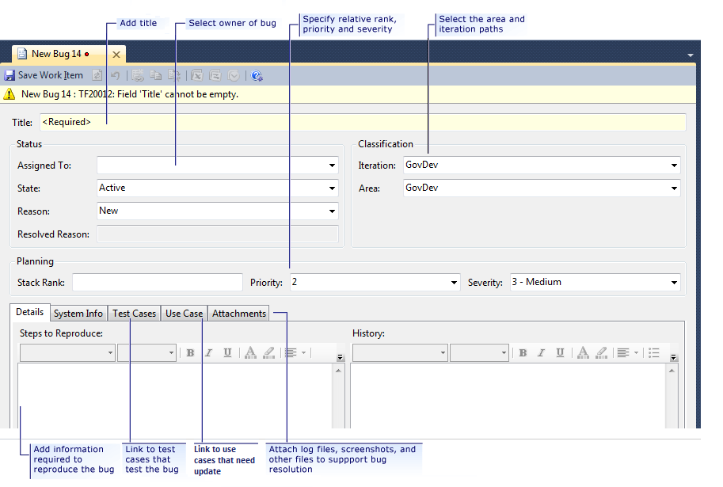
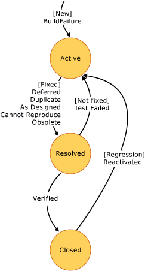

You can learn how to fill in the details of a bug work item in this topic. For information about how to create a bug work item, see Work Items and Workflow (GovDev).
|
In this topic |
Related topics |
|---|---|
|
Overview of Bug Creation and Tracking |
Process Guidance Workbooks Dashboards and Reports Field Reference |
Required Permissions
To view a bug, you must be a member of the Readers group or your View work items in this node must be set to Allow. To create or modify a bug, you must be a member of the Contributors group or your Edit work items in this node permissions must be set to Allow. For more information, see Managing Permissions.
 Defining
a Bug
Defining
a Bug
A bug communicates that a potential problem exists in the code that your team is developing. When you define a bug, you want to accurately report the problem in a way that helps the reader to understand the full impact of the problem. You should also describe the actions that you took to find the bug so that other members of the team can more easily reproduce the behavior. The test results should clearly show the problem. Clear, understandable descriptions affect the probability that the bug will be fixed.
The work item form for a bug stores data in the fields and tabs that the following illustration shows:
When you define a bug, you must define the Title in the top section of the work item form and type text in the Symptom box on the Details tab. You can leave all other fields blank or accept their default values.
To define a bug
-
In the top section of the work item form for a bug, specify one or more of the following fields:
-
In Title (required), type a phrase that describes the code defect that was found.
-
In the Assigned To list, click the name of the team member who is responsible for fixing the bug, or leave this field blank to be assigned later during triage.
 Note
Note
You can assign work items only to members of the Contributors group.
-
In the Reason list, click Build Failure, or leave the assignment as New.
By default, the value of the Reason field is New. The Resolved Reason field is read-only and captures the value of the Reason field when it is changed from Active to Resolved. For more information about these fields and how you can use them to track workflow, see Resolving and Closing a Buglater in this topic.
-
In the Area and Iteration lists, click the appropriate area and iteration, or leave these fields blank to be assigned later during a planning or triage meeting.
Note
The project administrator for each team project defines area and iteration paths for that project so that the team can track progress by those designations. For more information, see Create and Modify Areas and Iterations.
-
In Rank, type a number that indicates the relative importance of the bug compared to the other bugs in the same iteration.
-
In the Priority list, click the value that indicates the importance of the bug, where 1 is most important and 4 is least important.
By default, the value of this field is 2.
-
In the Severity list, click the value that indicates the impact of the bug on the project.
By default, the value of this field is 3 - Medium.
-
-
On the Details tab, specify one or more of the following types of information:
-
In Steps to Reproduce, provide as much detail as needed so that another team member can understand the problem that must be fixed.
You can format the content that you provide in this field.
-
In the History box, provide as much detail as you want.
You can format the content that you provide here.
Every time that a team member updates the bug, its history shows the date of the change, the team member who made the change, and the fields that changed.
-
-
On the System Info tab, specify one or more of the following types of information:
-
In the Found in Build list, click or type the name of the build in which the defect was found.
Note
Each build is associated with a unique build name. For information about how to define build names, see Customize Build Numbers.
-
In Integrated in Build, do not specify a build when you create the bug. When you resolve a bug, type the name of the build that incorporates the code or fixes a bug.
-
In System Info, describe the software environment in which the bug was found.
-
-
(Optional) Link the bug to another work item, such as a test case or another bug.
For more information about these activities, see Linking a Test Case to a Buglater in this topic.
-
On the work item toolbar, click
 Save Work Item. Note
Save Work Item. Note
After you save the bug, the identifier appears in the title under the work item toolbar.
Linking
a Test Case to a Bug
By linking bugs to test cases, you support the accuracy and completeness of many reports that are defined for GovDev for TFS 2010.
To link an existing test case to a bug
-
On the Test Cases tab, click
 Link to.
Link to.
The Add Link to Bug dialog box opens.
-
In the Link Type list, leave the default value of Tested By, which is the only type of link that is supported for
links that you add from the Test Cases tab.
-
In Work item IDs, type the ID of one or more test cases to
which you want to link the bug, or click Browse to locate
the test case to which you want to link. You can click the My Test
Cases team query to locate test cases and then select the check box next
to the test case to which you want to link.
For more information, see
Find Work Items to Link or Import.
-
(Optional) Type a description for the test case to which you are linking.
-
Click OK.
-
Click
Save Work Item.
Note
Both the bug and test case to which you linked it are updated.
-
On the Test Cases tab, click
Link to. The Add Link to Bug dialog box opens.
-
In the Link Type list, leave the default value of Tested By, which is the only type of link that is supported for links that you add from the Test Cases tab.
-
In Work item IDs, type the ID of one or more test cases to which you want to link the bug, or click Browse to locate the test case to which you want to link. You can click the My Test Cases team query to locate test cases and then select the check box next to the test case to which you want to link.
For more information, see Find Work Items to Link or Import.
-
(Optional) Type a description for the test case to which you are linking.
-
Click OK.
-
Click
Save Work Item. Note
Both the bug and test case to which you linked it are updated.
Linking a Use Case to a Bug
By linking bugs to use cases, you support the accuracy and completeness of many reports that are defined for GovDev for TFS 2010.
To link an existing test case to a bug
-
On the Use Case tab, click
Link to. The Add Link to Bug dialog box opens.
-
In the Link Type list, leave the default value list, leave the default value of Parent, which is the only type of link that is supported for links that you add from the Use Case tab.
-
In , type the ID of one or more t, type the ID of one use case to which you want to link the bug, or click Browse to locate the use case to which you want to link. You can click the Use Case Planning team query to locate use cases and then select the check box next to the use case to which you want to link.
For more information, see tp://msdn.microsoft.com/library/962b01e8-9b2f-46bf-b13e-15020f35b665"> Find Work Items to Link or Import.
-
(Optional) Type a description for the test case to which you are linking.
-
Click OK.
-
Click
Save Work Item. Note
Both the bug and test case to which you linked it are updated.
Adding
Details and Attachments to a Bug
You can add information to a bug that helps others reproduce or fix the bug. You add details to bugs in the following ways:
-
Type information in the Steps to Reproduce or History fields.
-
Attach a file.
For example, you can attach an e-mail thread, a document, an image, a log file, or another type of file.
-
Add a hyperlink to Web site or to a file that is stored on a server or Web site.
To add details to a bug
-
Click the Details tab.
-
In Steps to Reproduce, type information.
-
(Optional) In History, type information.
You can format text to provide emphasis or capture a bulleted list. For more information, see Titles, IDs, Descriptions, and History (GovDev).
-
Click
Save Work Item.
To add an attachment to a bug
-
On the Attachments tab, perform one of the following actions:
-
Drag a file into the attachment area.
-
Click
 , or press CTRL-V to paste a file
that you have copied.
, or press CTRL-V to paste a file
that you have copied. -
Click
 Add, and then click Browse. In the
Attachment dialog box, type or browse to the name of the
file that you want to attach.
Add, and then click Browse. In the
Attachment dialog box, type or browse to the name of the
file that you want to attach. (Optional) In the Comment box, you can optionally type additional information about the attachment. To return to the Attachments tab, click OK.
-
-
Click
Save Work Item.
Resolving
and Closing Bugs
When a bug has been fixed, you change its State from Activeto Resolved. When the fix has been verified, you change its state from Resolvedto Closed. Any team member can change the state of a bug. Also, a bug that cannot be fixed can be resolved for other reasons as described later in this topic. For more information, see Assignments and Workflow (GovDev).
To resolve or close a bug
-
Open the work item form for the bug.
-
In the State list, click Resolved or Closed.
-
If you change the state from Active to Resolved , the Reason field changes to Fixed .
Verify that the value for Reason is correct, or click a different option.
For more information, see From Active to Resolvedlater in this topic.
-
If you change the state from Resolved to Closed, the Reason field changes to Verified .
-
-
Click
Save Work Item.
|
Typical workflow progression:
Additional workflow transitions:
|
Bug State Diagram  |
Active (New or Build Failure)
A team member creates the bug, provides a descriptive title, and, in Description, adds as much detail as possible about the bug. The bug remains in the active state as it is being investigated and fixed.
From Active to Resolved
You can specify one of the reasons in the following table when you resolve a bug:
|
Reason |
When to use |
Additional actions to take |
|---|---|---|
|
Fixed (default) |
After you fix the problem that the bug identifies, run unit tests to confirm that the problem is fixed, and check in the changed code. |
Link the bug to the changeset when the fix is checked in. |
|
Deferred |
When the bug will not be fixed in the current iteration. The bug will be postponed until the team can reevaluate it for a future iteration or version of the product. |
(optional) Move the bug to a future iteration or the backlog, and maintain it in an active state. |
|
Duplicate |
When another active bug reports the same problem. |
Create a link to the bug that remains active so that the team member who created the duplicate bug can more easily verify the duplication before closing the bug. |
|
As Designed |
When the bug describes an expected condition or behavior of the system or is outside the acceptance criteria for either the application area or the use case that the bug affects. |
None. |
|
Cannot Reproduce |
When team members cannot reproduce the behavior that the bug reports. |
None. |
|
Obsolete |
When the bug no longer applies to the product. For example, a bug is obsolete if it describes a problem in a feature area that no longer exists in the product. |
None. |
The following data fields are automatically captured when the state of a bug is changed from active to resolved:
-
Resolved By: Name of the team member who resolved the bug.
-
Resolved Date: Date and time when the bug was resolved, as recorded by the server clock.
-
State Change Date: Date and time when the state of the bug was changed.
Resolved
The team member who is assigned to fix the bug resolves it when it is fixed. Or, a team member might determine that the bug should be resolved for other reasons, as the following table describes.
From Resolved to Closed
The only supported Reason for closing a bug is Verified.
The following data fields are automatically captured when the state of a bug is changed from resolved to closed:
-
Closed By: Name of the team member who closed the bug.
-
Closed Date: Date and time when the bug was closed, as recorded by the server clock.
-
State Change Date: Date and time when the state of the bug was changed.
From Resolved to Active
You can specify one of the reasons in the following table when you reactivate a bug from a resolved state:
|
Reason |
When to use |
Additional actions to take |
|---|---|---|
|
Not fixed |
When the resolution is unacceptable or if the fix was incorrect. |
Provide details about why you denied the resolution or why the fix did not work correctly. This information should assist the next person who owns the bug in resolving it appropriately. |
|
Test Failed |
When a test demonstrates that the bug still exists. |
Provide details about which test failed and in which build. |
The following data is automatically captured when the state of a bug is changed from resolved to active:
-
Activated By: Name of the team member who reactivated the bug.
-
Activated Date: Date and time when the bug was reactivated, as recorded by the server clock.
Closed
A team member can change a closed bug to active if the problem or code defect that it describes reappears or was not fixed previously.
From Closed to Active
You can specify one of the reasons in the following table when you reactivate a bug from a closed state:
|
Reason |
When to use |
Additional actions to take |
|---|---|---|
|
Regression |
When the bug reappears in later builds of the code. |
None. |
|
Reactivated |
When the bug was closed in error or for some other reason. |
None. |
The following data is automatically captured when the state of a bug is changed from closed to active:
-
Activated By: Name of the team member who reactivated the bug.
-
Activated Date: Date and time when the bug was reactivated, as recorded by the server clock.